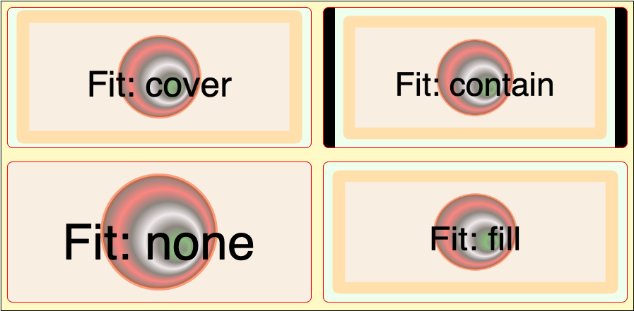
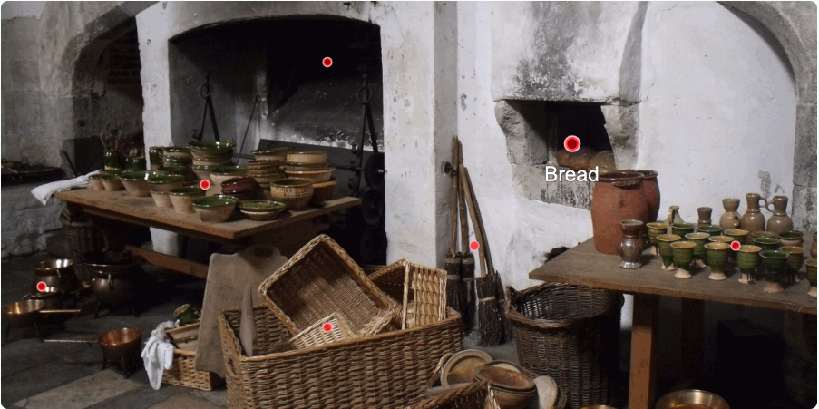
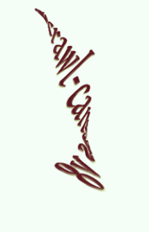

Welcome to the Scrawl-canvas Library
Scrawl-canvas is a Javascript library for working with the HTML5 <canvas> element. The library:
- Defines a set of factory functions for creating a wide range of graphic artefacts and effects, which can be drawn on a canvas.
- Includes an adaptable - yet easy to use - protocol for positioning, displaying and animating artefacts and effects across the canvas.
- Adds functionality to make <canvas> elements responsive, adapting their size to their surrounding environment while remaining fully interactive.
- Helps make <canvas> elements more accessible for both keyboard and AT users.
→ See the code on Github.
→ View the CodePen collection.
→ Discuss Scrawl-canvas on Discord.
Why use Scrawl-canvas?
Working with the native Canvas API is hard work
Particularly when the desired result is more complex than a couple of coloured boxes in a static display.
- Working directly with the canvas-related APIs means writing significant amounts of Javascript boilerplate code.
- <canvas> elements can be resized and styled using CSS, but changing the CSS size does not affect the element's drawing dimensions - leading to ugly results.
- Events work on the canvas, not on the graphical objects within the canvas - we cannot use those objects as links or hot-spots (click/tap events), we cannot give them the equivalent of a CSS hover state (focus/blur events), we cannot drag-and-drop them around the display (move events).
- Tracking a user's interaction with the various parts of a canvas display, for analytics and research on web page performance, is particularly difficult.
- We cannot easily save and share displays, effects and animations; each <canvas> element's output is tightly coupled to the code that defines that output.
- Of most concern, canvases are entirely graphical - visual - by nature; they come with significant accessibility issues. Given the ever-stricter requirements for websites to be accessible to all users, this makes using a canvas to present important information a dangerous proposition.
But the benefits of using canvases for graphical displays and animations are also great
- Canvases are part of the DOM (unlike Flash).
- They are natively wired for events and user interactions.
- They use immediate mode redering (which makes them very quick).
- The canvas-related APIs are designed to be used with Javascript.
Scrawl-canvas overcomes these barriers
Scrawl-canvas is fast, and developer-friendly. It's suitable for building infographics, games, interactive videos - whatever we can imagine for a 2D graphical presentation. And it is modular - we can break the code for a particular effect into its own module file which can be reused in other projects.
Scrawl-canvas offers all of this while never losing its hard focus on making the <canvas> element accessible, responsive and fully interactive while at the same time offering a pleasant developer experience.
Responsive canvas elements
The HTML5 <canvas> element was not designed to be responsive. When we add a canvas to a web page, we give it fixed width and height values, which define its drawing (bitmap) dimensions.
To make the web page responsive, so that it can look good across a range of browser sizes and device screens, we need to define a range of sizes using relative proportions - such as CSS percentage values.
This approach fails for the <canvas> element because browsers will stretch its drawing area to match the CSS-defined dimensions, which often leads to an ugly, distorted result.
Scrawl-canvas allows us to define the canvas dimensions in CSS, then displays the canvas output in that area in a variety of ways using a fit attribute (which parodies the CSS object-fit property):

Fitting the canvas into a space in the web page is one thing. Positioning the artefacts and effects that make up the canvas's display is another. The HTML5 Canvas API includes many functions for creating graphical elements; all of them use absolute pixel values to define, size and position them on the canvas.
Scrawl-canvas simplifies the Canvas API, supplying a range of factory functions to create 'artefacts', 'styles' and other objects - including animations and tweens - which can be used together to create a canvas display.
Once created, we can position these objects on the canvas in a number of ways:
- Absolute positioning - using the canvas like a coordinates grid (which is how the Canvas API positions objects).
- Relative positioning - place objects on the canvas using relative percentage values; if the canvas size changes, the objects stay in the same place relative to the canvas.
- Reference positioning - use an artefact as a reference against which other artefacts can position themselves; when we update the reference artefact's position, the other artefacts update their position values automatically.
The canvas below uses all these techniques to create its display. The result is entirely responsive - try resizing the browser window to see how the scene looks at smaller and larger viewport sizes!
Accessible and interactive canvas elements
The <canvas> element really comes into its own when we add user-interaction features to it:
- Hotspots - defined areas within the display which users can hover over or click/tap to reveal additional information, trigger a tween animation, cause changes in other parts of the web page ... or even navigate to a different web page.
- Mouse/touch cursor tracking - attach a graphical artefact to the mouse cursor, or drag-and-drop artefacts around the canvas (or even between different canvases).
Building this functionality for a normal, static canvas display is difficult enough. To build it for a responsive canvas display may seem impossible, given modern time and resource constraints.
Scrawl-canvas makes building such features easier!

More importantly, Scrawl-canvas does a lot of heavy lifting to make those features accessible to users who cannot - for whatever reason - view the canvas display. Links can be made accessible via the keyboard; graphical text is (by default) copied into the DOM so it can be accessed by screen readers. Every Scrawl-canvas canvas comes with ARIA attributes.
Tracking user journeys
Once we've built the canvas, we can add third-party tracker functionality to help record user journeys through its display, record click convertions - whatever the client needs to monitor the effectiveness of their site or campaign.
Go wild with your web pages: do amazing stuff!

Resources
Documentation is supplied as inline comments in the code base, and can be viewed as web pages from the Docs link. Most module files include links to test examples which demonstrate the code functionality.
Code examples can be found in the Demos section of this site. All the demos have links to view the code.
The Learning and "How do I?" cookbook articles on this site are currently under development. If people have suggestions for articles please let me know via GitHub.
The code repository can be found and downloaded from GitHub. It has been released under an MIT Licence and is free-to-use in both personal and commercial projects.